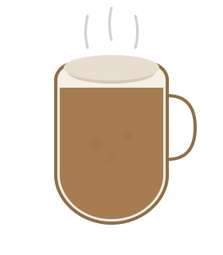
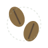
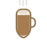
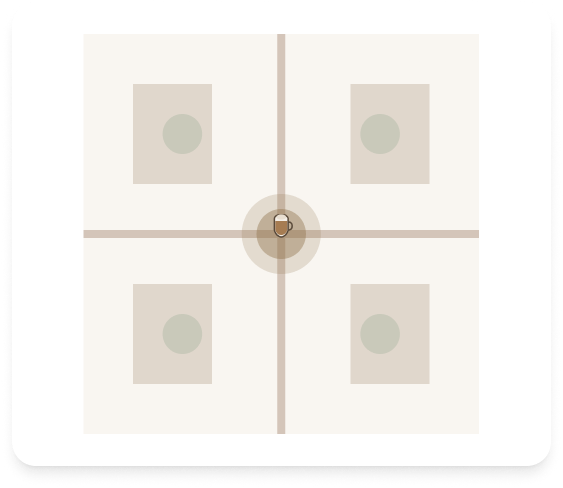

Cafeteria
Artesanal
Bem-vindo ao nosso cantinho acolhedor onde cada xícara conta uma história. Feito artesanalmente com amor, preparado na perfeição e servido com um sorriso. Descubra a blend perfeita para o seu momento perfeito.
Aberto Todos os Dias: 7h - 20h Desde 2020

Fresco Diariamente


Sobre Nós
Fundada em 2020, nossa cafeteria nasceu de um sonho simples: criar um santuário acolhedor onde as pessoas possam desacelerar, conectar-se e saborear um café excepcional. Cada xícara que servimos é cuidadosamente preparada pelos nossos baristas apaixonados que acreditam que o café é mais do que uma bebida—é uma experiência.
Obtemos nossos grãos de fazendas sustentáveis ao redor do mundo, torramos em pequenos lotes e preparamos cada xícara com intenção. Nosso espaço aconchegante é projetado para parecer sua segunda casa, onde cada visita traz conforto e alegria.

Nosso Cardápio
Descubra nossas criações mais amadas, preparadas com paixão e servidas com carinho

Cappuccino Clássico
Espresso encorpado com leite vaporizado aveludado
R$ 12,00

Latte de Baunilha
Espresso suave com baunilha e leite
R$ 13,50

Dose de Espresso
Ousado e intenso de origem única
R$ 8,00

Macchiato de Caramelo
Espresso em camadas com calda de caramelo
R$ 14,50

Croissant
Massa folhada francesa amanteigada
R$ 9,50

Latte de Matcha
Matcha cerimonial com leite de aveia
R$ 14,50
Por Que Nos Escolher

Grãos de Café Frescos
Obtemos grãos premium de fazendas sustentáveis e os torramos semanalmente para garantir máximo sabor e frescor em cada xícara.
Embalagens Sustentáveis
Nosso compromisso com o planeta inclui copos ecológicos, tampas compostáveis e embalagens recicláveis para todos os nossos produtos.

Receitas Artesanais
Cada bebida é preparada pelos nossos baristas qualificados usando técnicas tradicionais e criatividade para proporcionar uma experiência única.
Nossa Galeria
Momentos capturados no nosso espaço acolhedor, onde cada xícara conta uma história


Visite-nos
Adoraríamos ver você! Venha tomar uma xícara de café e experimente o calor da nossa comunidade.
Localização
Rua Aconchegante, 123
Bairro do Café, SP 12345-678
Horário de Funcionamento
Segunda - Sexta: 7h às 20h
Sábado - Domingo: 8h às 21h
Contato
Telefone: (11) 98765-4321
Email: contato@cafeteriaartesanal.com.br
